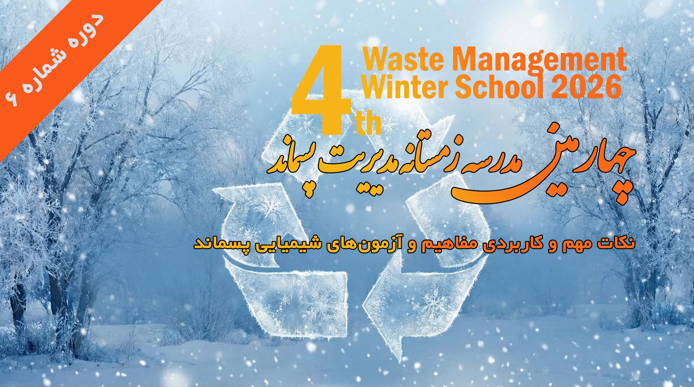

این دوره با موفقیت برگزار شد
چهارمین مدرسه زمستانه مدیریت پسماند: نکات مهم و کاربردی مفاهیم و آزمونهای شیمیایی پسماند
انجمن علمی مهندسی و مدیریت پسماند ایران با همکاری دانشکده بهداشت دانشگاه علوم پزشکی تهران و سایر نهادهای معتبر محیطزیستی، دوره ششم از «چهارمین مدرسه زمستانه مدیریت پسماند ۲۰۲۶» را به صورت مجازی و کاملاً رایگان برگزار کرد.
مدرس دوره: مهندس لیلا کریمی
کارشناس ارشد شیمی آلی
مدیر واحد تحقیقات و کارشناس محیط زیست صنایع شیمیایی
کارشناس رسمی استاندارد
مشخصات برگزاری دوره
تاریخ برگزاری:
۷ اسفند ماه ۱۴۰۴
زمان برگزاری:
ساعت ۱۹ الی ۲۱
پلتفرم برگزاری:
اسکای روم (مجازی)
هزینه ثبتنام:
رایگان (همراه با ارائه گواهی)
گواهینامه شرکت در دوره
از حضور گرم تمامی پژوهشگران، دانشجویان و علاقهمندان به حوزه محیطزیست در این وبینار سپاسگزاریم. گواهینامههای حضور در این دوره، پس از بررسی لیست حاضران در سامانه اسکایروم، برای شرکتکنندگانی که فرم ارزیابی نهایی را تکمیل کردهاند، از طریق سامانه دکتر پسماند و ایمیل ارسال خواهد شد.
جهت اطلاع از سایر دورهها و کارگاههای آموزشی پیشرو، حتماً کانال تلگرام انجمن را دنبال نمایید.